第 18 讲：高级渲染——高级光传输与外观建模
从无偏/有偏光传输到头发、布料、颗粒、次表面散射等复杂材质的外观建模，建立对真实感渲染前沿方法的整体地图。
◆ 学完这一讲，你应该能
能区分无偏（unbiased）与有偏（biased）蒙特卡洛估计器，并解释光子映射为何是有偏但一致的
能说明双向路径追踪（BDPT）、MLT、光子映射、VCM、即时辐射度（IR）各自的核心思想与适用场景
能解释参与介质（雾、云）的散射与相位函数，并知道其渲染的基本随机游走思路
能说明头发/毛发渲染的 Marschner 模型与双圆柱模型（Double Cylinder）的差异，以及髓质（medulla）的作用
能解释 BSSRDF 与 BRDF 的本质区别，知道偶极子近似（Dipole Approximation）在次表面散射中的作用
能列举布料渲染的三种思路（表面 BRDF、参与介质、逐纤维）及其局限
能说明细节材质（glinty material）的困难来源与 p-NDF 的基本思想，以及程序化外观（procedural appearance）用噪声替代纹理的思路
核心结论速记
无偏估计器的期望永远等于正确值；有偏估计器在样本数有限时有系统误差，但若样本数趋于无穷时收敛到正确值，则称为一致的（consistent）。
BDPT 从相机和光源各追踪子路径再连接端点，适合光源侧光传输复杂的场景，但实现难、速度慢。
MLT 用马尔可夫链蒙特卡洛在路径空间局部扰动，擅长探索困难路径，但收敛率难估计、逐像素收敛不均，通常不用于动画。
光子映射是两阶段的有偏方法：光子追踪 + 最终收集，用局部密度估计着色，擅长 SDS 路径和焦散；有偏但一致（有偏≈模糊，一致≈样本无穷时不模糊）。
VCM 结合 BDPT 与光子映射，把无法连接但可合并的子路径端点用光子合并处理。
即时辐射度（IR）把受光表面当作虚拟点光源（VPL）来渲染，快且适合漫反射场景，但 VPL 靠近着色点会出现尖峰，且难处理光泽材质。
参与介质中光会被吸收和散射，用相位函数描述散射的角度分布；渲染时随机选择方向和距离，并在每个着色点连接光源。
头发用 Marschner 模型（R、TT、TRT 三种光路）描述，动物毛发需要双圆柱模型加入髓质散射；BSSRDF 把出射点与入射点分开，突破 BRDF 的同点假设。
细节材质（如金属闪片）因法线分布高频变化导致路径采样极难，p-NDF 把像素内法线分布聚合起来解决；程序化外观用噪声函数在运行时生成细节，无需纹理。
011. 有偏与无偏：蒙特卡洛估计器的两种性格
这一讲是“高级专题”，课件明确说“很多内容，但非常高层，主要是科普”。我们先把最基础的概念钉死：有偏（biased）与无偏（unbiased）。
在路径追踪里，我们用蒙特卡洛估计积分。一个估计器如果期望值永远等于真实值，不管用多少样本，它就是无偏的。反之，如果期望值有系统误差，就是有偏的。有偏里有一个特殊且重要的子类：一致的（consistent）——当样本数趋于无穷时，期望收敛到正确值。
用大白话说：
- 无偏：样本少时噪声大，但平均下来是对的。
- 有偏但一致：样本少时不仅噪声大，还“糊”；样本无穷多时糊会消失。
- 有偏且不一致：无论多少样本都错，这种一般不用。
课件后面讲光子映射时会回看这一页，因为光子映射正是“有偏但一致”的典型：它用局部密度估计，有限光子数下结果偏模糊，但光子数趋于无穷时收敛。
为什么要在意这个？因为不同算法在“偏差”和“方差”之间做 trade-off。无偏方法（如 BDPT、MLT）通常更慢或更难实现；有偏方法（如光子映射）可以用少量样本得到视觉上可接受的结果，但物理上不精确。工程上选型时，先问自己：我要的是“物理正确”还是“看起来对且快”。
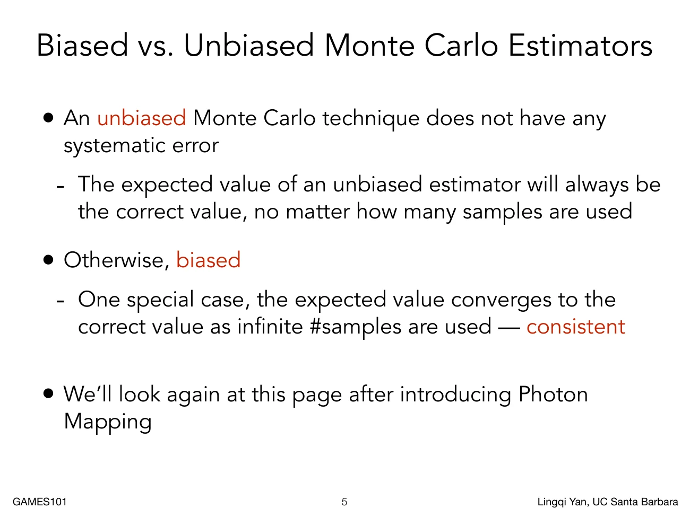
常见坑
把“有偏”直接等同于“错误”：有偏但一致的方法在样本足够多时仍收敛到正确结果，只是有限样本下有系统误差。
以为无偏就一定更好：无偏方法可能方差极大或实现极难，工程上常根据场景选择有偏方法。
UE / Unity 落地
UE 的 Lumen 和路径追踪器在概念上属于不同的光传输策略；理解有偏/无偏有助于判断“为什么某些效果在实时下是近似”。
Unity 的 Progressive Lightmapper 使用蒙特卡洛采样，其降噪与偏差设置体现了方差与偏差的权衡。
022. 双向路径追踪与 MLT：从光源和相机同时出发
双向路径追踪（Bidirectional Path Tracing, BDPT） 的核心思想很简单：一条路径连接相机和光源。普通路径追踪只从相机出发，遇到光源就结束；BDPT 则同时从相机和光源各追踪一条子路径，然后把两条子路径的端点连接起来形成完整路径。
这适合什么场景？课件说：当光源侧的光传输很复杂时（比如光源被遮挡、需要经过多次弹射才能到达相机），从相机出发很难采样到光源，而从光源出发更容易找到贡献大的路径。
代价是：实现困难、速度慢。因为要处理两条子路径的各种连接组合，还要做多重重要性采样（MIS）来加权。
Metropolis 光传输（Metropolis Light Transport, MLT） 是马尔可夫链蒙特卡洛（MCMC）的应用：它不独立采样，而是从当前样本“跳”到下一个样本，跳跃由某个概率密度函数控制。关键思想是局部扰动已有路径得到新路径。
MLT 的优点：非常擅长局部探索困难光路（比如焦散、狭窄缝隙中的光）。它也是无偏的。
缺点也很明显：收敛率难以估计；不保证每个像素收敛速度相同，所以画面容易出现“脏”的区域；因此通常不用于渲染动画（动画要求帧间稳定，而 MLT 的噪声分布不均匀且帧间不一致）。
一句话总结：BDPT 和 MLT 都是无偏的“重型武器”，适合离线渲染的困难场景，不适合实时或动画。
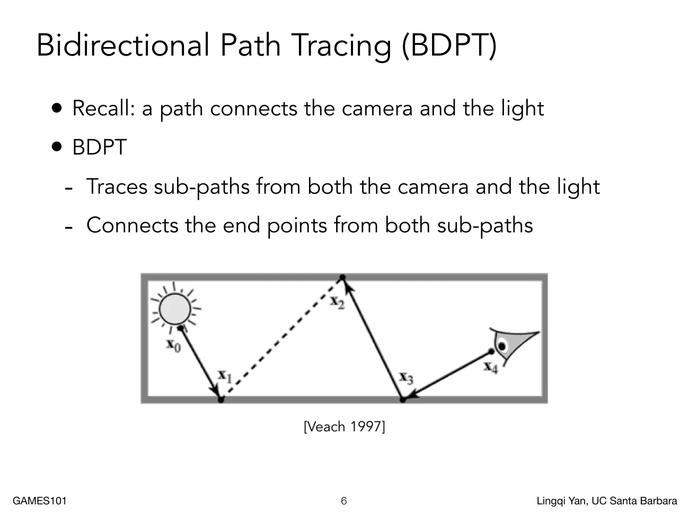
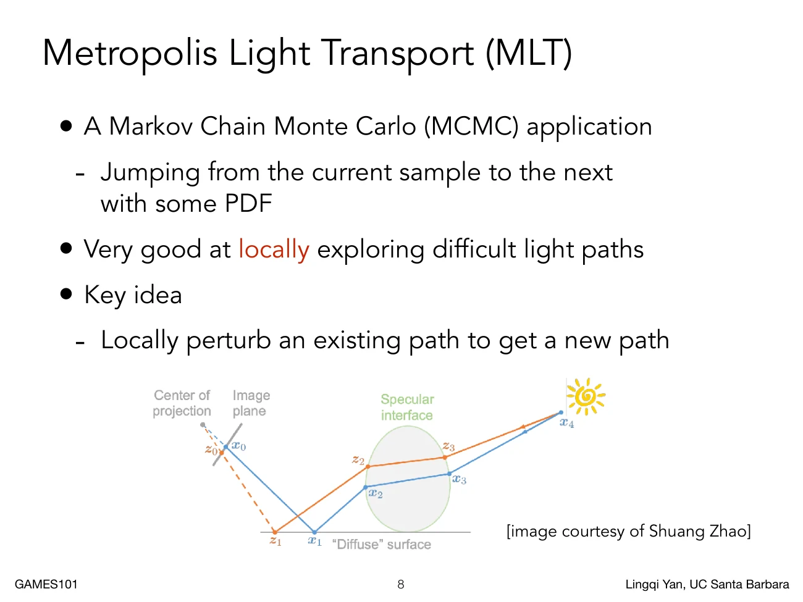
常见坑
BDPT 连接端点时忘记做多重重要性采样加权 → 某些路径被重复计算或权重错误 → 画面出现亮度偏差，需检查 MIS 权重。
MLT 用于动画序列 → 帧间噪声模式不一致导致闪烁 → 动画应改用逐帧独立采样或更稳定的方法。
UE / Unity 落地
UE 的路径追踪器（Path Tracer）在概念上支持双向路径追踪的变体；实时 Lumen 则用更近似的光传输。
Unity 的离线渲染或 HDRP 路径追踪模式可对比不同光传输策略的效果差异。
033. 光子映射：两阶段的有偏方法
光子映射（Photon Mapping） 是这一讲的重点之一，它是一种有偏的两阶段方法，特别擅长处理 SDS 路径（Specular-Diffuse-Specular，即镜面-漫反射-镜面）和生成焦散（caustics）。
两个阶段：
- 光子追踪（photon tracing）：从光源发射光子，让它们在场景中弹射，记录落在漫反射表面上的光子。
- 光子收集（photon collection / final gathering）：从相机发射子路径，弹射直到击中漫反射表面，然后在该点做密度估计。
局部密度估计（local density estimation） 是核心计算：某个区域光子越多，应该越亮。对每个着色点，找到最近的 N 个光子，用它们覆盖的表面积来估计密度。
为什么有偏？因为理论上密度是 \( \frac{dN}{dA} \)，但我们实际算的是 \( \frac{\Delta N}{\Delta A} \)，两者不相等。不过，当光子数趋于无穷时，同样的 N 个光子覆盖的 \( \Delta A \) 会越来越小，趋近于 \( dA \)，所以它是一致的。
课件给了一个非常直观的理解：有偏 == 模糊；一致 == 样本无穷多时不模糊。有限光子数下，密度估计相当于用一个大核去平滑，所以糊；光子越多，核越小，越清晰。
那为什么不用“固定范围搜索”做密度估计？因为固定范围会导致密度估计的核大小不随光子数变化，无法保证一致性，且在不同尺度下表现不一致。
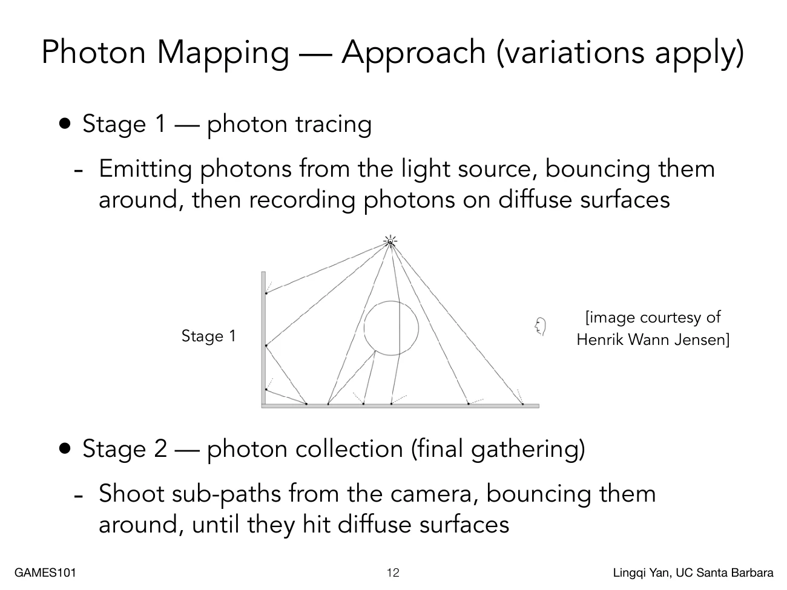
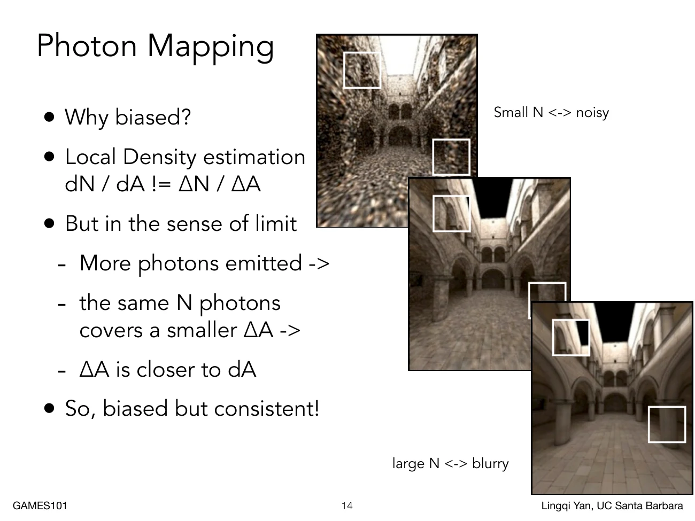
常见坑
光子数 N 取太小 → 密度估计核太大，结果过度模糊 → 增加光子数或调整最终收集的搜索半径。
把光子映射当成无偏方法 → 在需要物理精确对比时出现亮度偏差 → 明确其有偏但一致的特性，必要时用无偏方法校验。
UE / Unity 落地
UE 的路径追踪器不直接暴露光子映射，但离线渲染器（如 Cycles、Arnold）有光子映射或类似焦散方案。
Unity 的 HDRP 不支持光子映射，但理解其思想有助于使用光照贴图和焦散近似。
044. VCM 与即时辐射度：组合与近似
顶点连接与合并（Vertex Connection and Merging, VCM） 是 BDPT 和光子映射的结合。动机很实际：BDPT 中两条子路径的端点如果无法直接连接（比如被遮挡或方向不匹配），这些子路径就浪费了。VCM 说：别浪费，如果端点不能连接但可以合并，就用光子映射的方式处理附近“光子”的合并。这样兼顾了 BDPT 的连接能力和光子映射的合并能力。
即时辐射度（Instant Radiosity, IR），也叫多光源方法（many-light approaches）。核心思想很巧妙：被照亮的表面可以当作光源。具体做法是：从光源发射子路径，把每条子路径的端点当作一个虚拟点光源（Virtual Point Light, VPL），然后用这些 VPL 像普通光源一样渲染场景。
优点：快，在漫反射场景上通常效果不错。
缺点：
- 当 VPL 非常靠近着色点时，会出现尖峰（spikes），因为点光源的 \( 1/r^2 \) 项爆炸。
- 无法处理光泽（glossy）材质，因为 VPL 假设光源是点光源，无法表达方向性反射。
这一节是“方法地图”的一部分：知道每种方法在什么场景下用、代价是什么，比记住公式更重要。
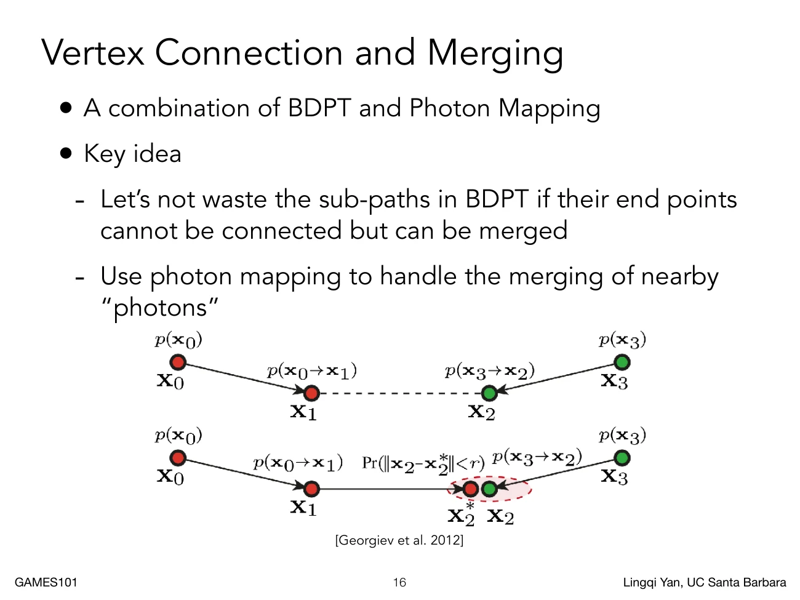
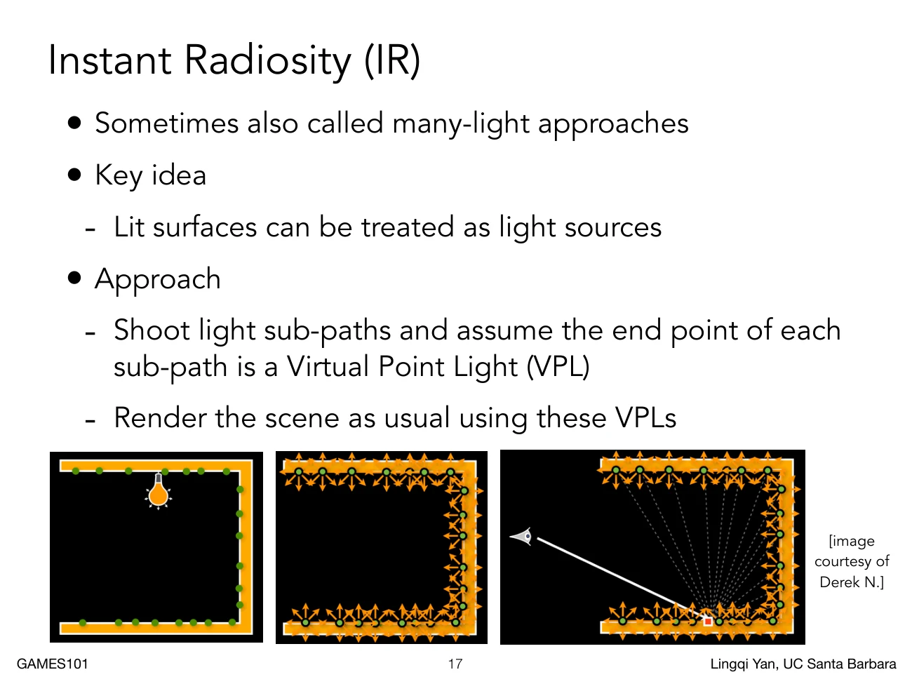
常见坑
VPL 离着色点太近 → 出现亮斑尖峰 → 限制 VPL 的最小距离或做钳制。
用 IR 渲染光泽材质 → 高光形状错误 → 光泽材质需要方向性光源，IR 只适合漫反射主导场景。
UE / Unity 落地
UE 的 Lumen 在概念上使用类似“表面作为光源”的辐射度缓存思想，与 IR 有相通之处。
Unity 的 Enlighten 实时全局光照也把表面片当作光源来传播能量。
055. 参与介质：雾、云与相位函数
从这一节开始进入高级外观建模（Advanced Appearance Modeling）。先讲非表面模型（Non-surface models），第一类是参与介质（Participating Media），典型例子是雾和云。
关键物理：光在参与介质中传播时，任意一点都可能被（部分）吸收和散射。吸收让光能消失，散射改变光的方向。
描述散射角度分布的是相位函数（Phase Function）：在介质中任意点 \( x \)，它给出光散射到某个方向的可能性。可以把它理解为“介质中的 BRDF”，但描述的是体散射而非表面反射。
渲染思路（课件给的随机游走）：
- 随机选择一个方向弹射；
- 随机选择一个直线传播的距离；
- 在每个“着色点”连接到光源。
这本质上是在介质中做路径追踪，只是把表面换成了体积。
应用：电影《超能陆战队》（Big Hero 6, 2014 Disney）、《刺客信条：枭雄》（Assassin’s Creed Syndicate, 2015 Ubisoft）都用了参与介质渲染。
工程上，实时渲染通常用近似：体积雾、高度雾、粒子系统。理解相位函数有助于调参（比如前向散射让雾在逆光时更亮）。
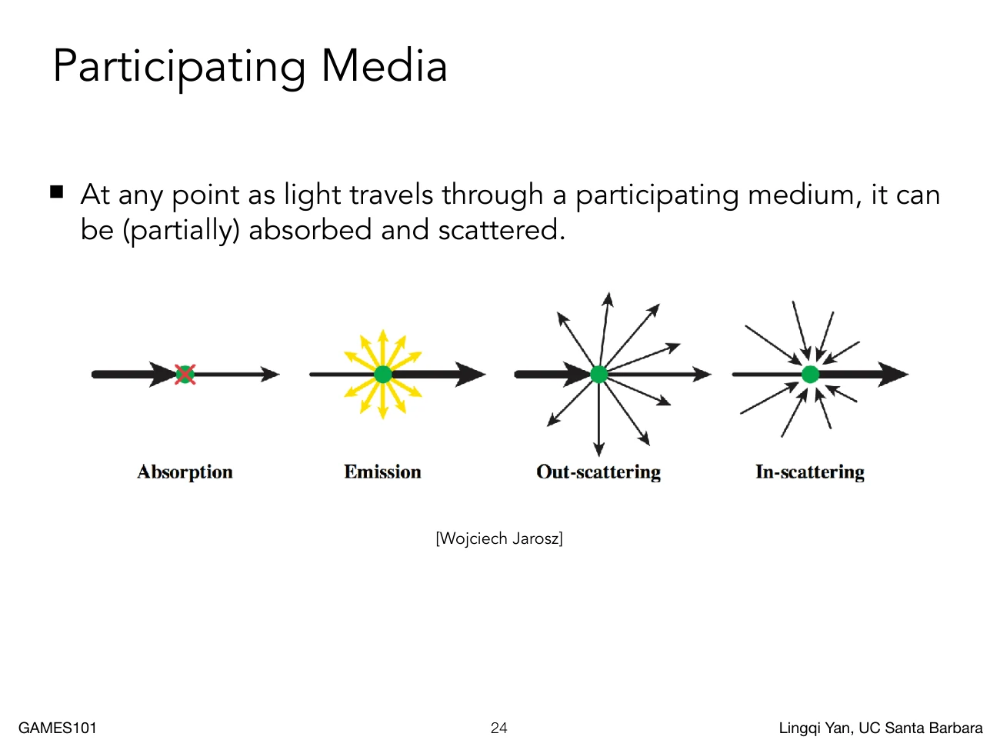
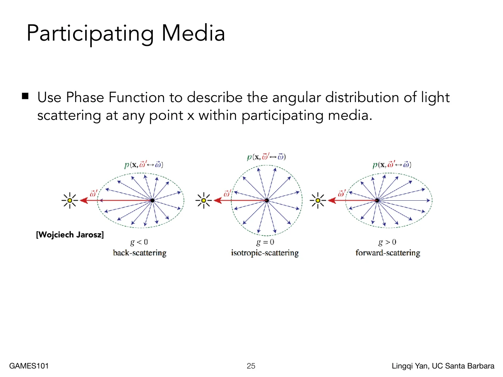
常见坑
把参与介质当表面渲染 → 缺少体积感、边缘错误 → 需要使用体积渲染或雾效近似。
忽略相位函数的方向性 → 雾在逆光/顺光下亮度不对 → 检查是否使用了各向同性假设，必要时改用 Henyey-Greenstein 等相位函数。
UE / Unity 落地
UE 有 Exponential Height Fog 和 Volumetric Fog，后者支持散射分布（类似相位函数）的调节。
Unity 的 HDRP 提供 Volumetric Fog，可调散射各向异性参数。
066. 头发与毛发：从 Marschner 到双圆柱模型
头发/毛发/纤维属于非表面模型中的 BCSDF（Bidirectional Curve Scattering Distribution Function）一类。
Kajiya-Kay 模型是早期简化模型，把头发当作圆柱，只考虑沿切线方向的高光，效果比较“塑料”。
Marschner 模型（Marschner et al. 2003）是里程碑：把头发看作类玻璃圆柱，考虑三种光路：
- R：表面反射；
- TT：透射-透射（穿过头发）；
- TRT：透射-反射-透射（进入头发、内反射、再出来）。
头发结构分三层：表皮（cuticle）、皮质（cortex，吸收光）、髓质（medulla）。Marschner 模型主要考虑皮质吸收。
但动物毛发与人类头发不同：课件指出，动物毛发有髓质（medulla），结构复杂且会散射光，而人类头发髓质不明显。只用 Marschner 模型渲染动物毛发会缺少“弥散且饱和”的外观。
双圆柱模型（Double Cylinder Model）（Yan et al. 2015, 2017）在 Marschner 基础上增加一个内部散射圆柱（髓质），产生额外的散射 lobe（如 TT_s、TRT_s 等）。课件展示了髓质大小对毛发外观的影响：髓质越大，散射越明显。
应用：电影《最终幻想15》（Final Fantasy XV, 2016）、《疯狂动物城》（Zootopia, 2016）、《猩球崛起3》（War for the Planet of the Apes, 2017）、《狮子王》（The Lion King, 2019）都用了毛发渲染技术。
工程上，实时渲染通常用各向异性高光近似头发，离线渲染才用完整 BCSDF。
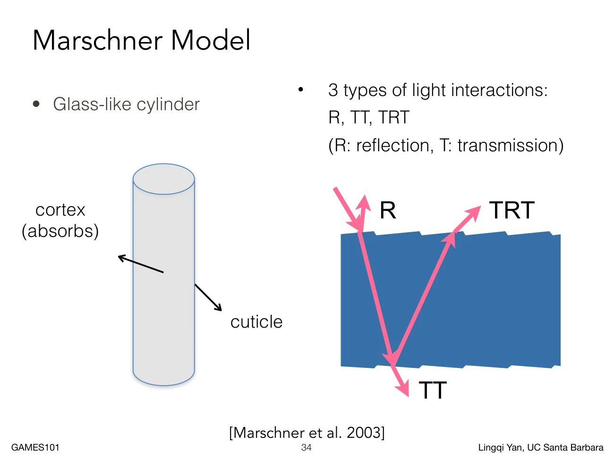
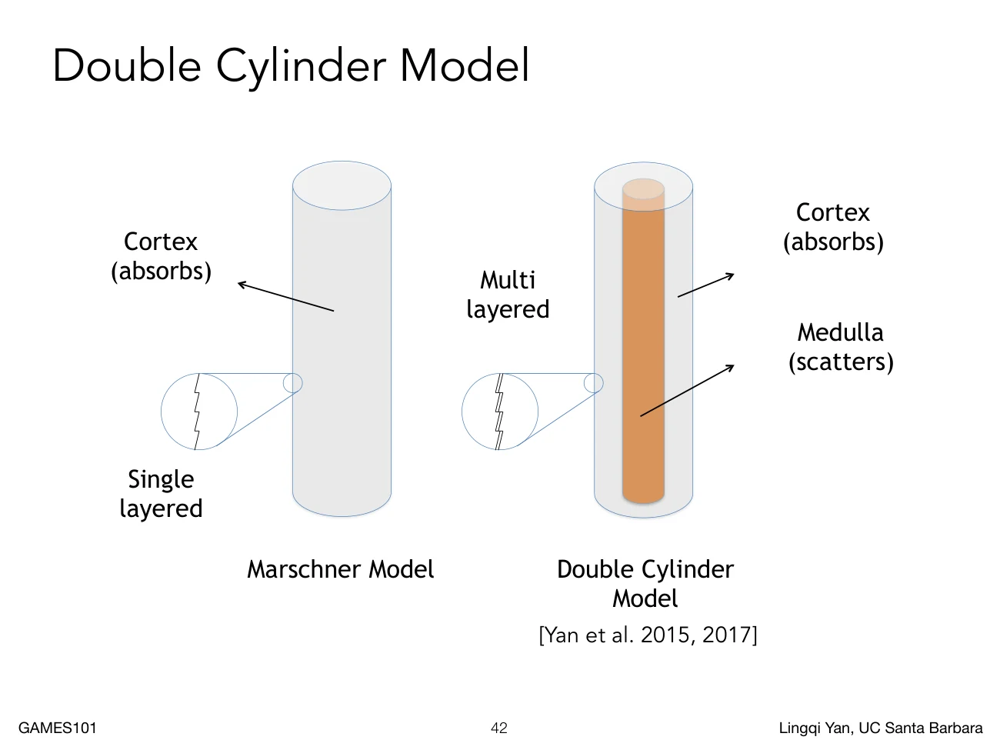
常见坑
用 Marschner 模型渲染动物毛发 → 缺少弥散饱和感 → 改用双圆柱模型或增加髓质散射项。
头发高光方向错误 → 切线方向未正确传入着色器 → 检查 hair tangent 是否归一化并正确插值。
UE / Unity 落地
UE 的 Hair Strands 和 Groom 组件支持基于物理的头发着色，概念上对应 Marschner 类模型。
Unity 的 HDRP 有 Hair 着色器，支持各向异性高光，可近似头发外观。
077. 次表面散射与 BSSRDF：光在表面下走了一段
半透明材质（Translucent Material） 如玉石、水母，视觉特征是光从不同于入射点的位置出射。这违反 BRDF 的基本假设：BRDF 假设入射和出射在同一点。
BSSRDF（Bidirectional Surface Scattering Reflectance Distribution Function） 是 BRDF 的推广：它描述从一个点 \( x_i \) 入射的光，在另一个点 \( x_o \) 出射的辐射亮度。渲染方程也从对方向积分推广为对表面所有点和所有方向的双重积分。
直接计算 BSSRDF 很贵，常用偶极子近似（Dipole Approximation）（Jensen et al. 2001）：用两个点光源（一个真实光源 + 一个虚拟光源）来近似半无限介质中的光扩散。虚拟光源在表面下方，用来模拟多次散射后的出射分布。
课件对比了 BRDF 与 BSSRDF 的渲染结果：BRDF 看起来像塑料，BSSRDF 才有玉石的通透感。
应用：高真实感人体皮肤渲染（课件展示了多位艺术家的作品）。
工程上，实时渲染常用屏幕空间的次表面散射近似（SSSSS），离线渲染才用完整 BSSRDF。
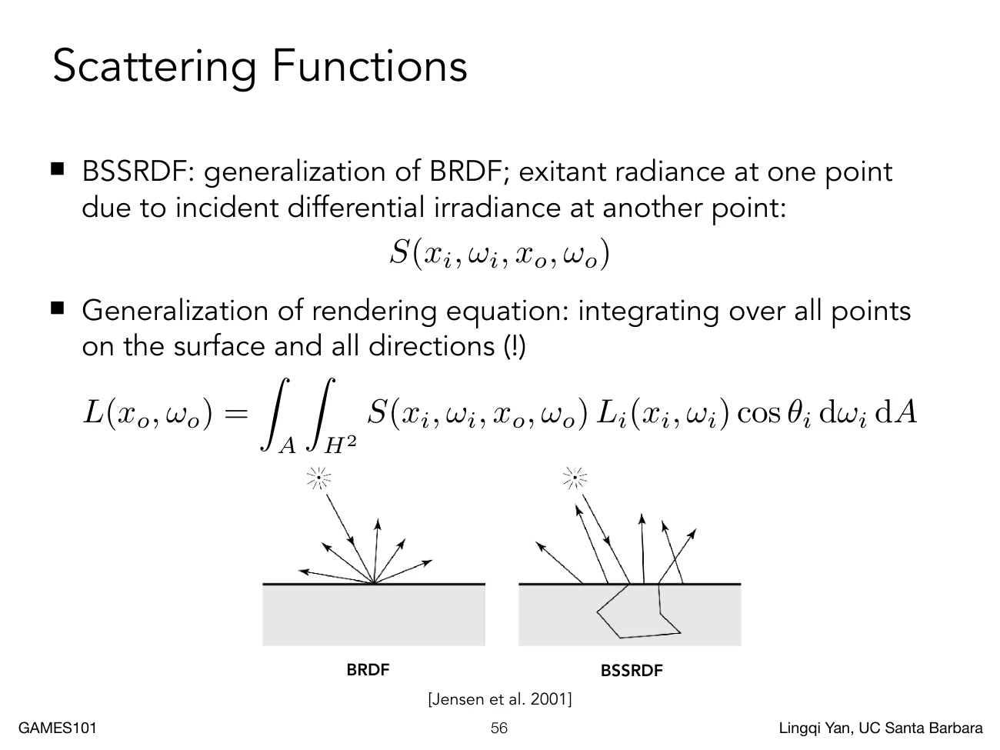
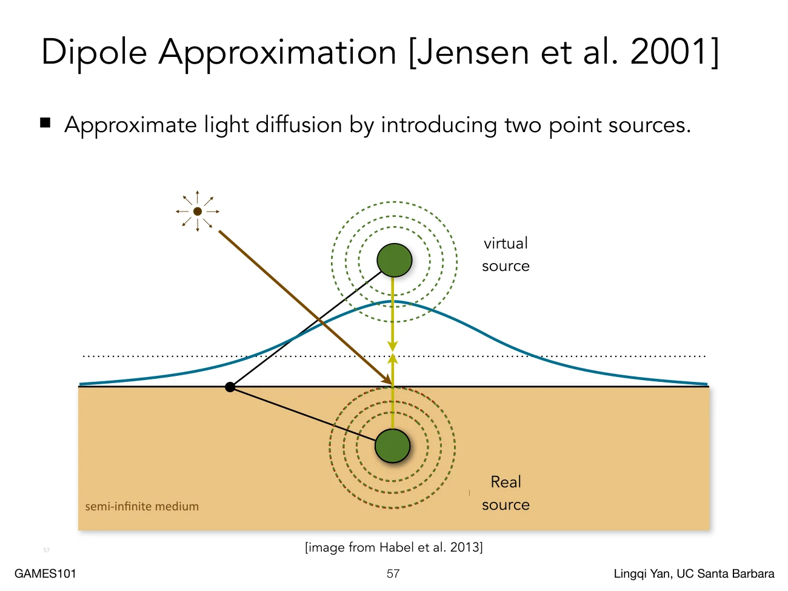
常见坑
用普通 BRDF 渲染皮肤/玉石 → 看起来像塑料，缺少通透感 → 改用 BSSRDF 或屏幕空间次表面散射近似。
偶极子近似参数（散射系数、吸收系数）设置不当 → 颜色过暗或过亮 → 根据材质查表或校准。
UE / Unity 落地
UE 的 Subsurface Profile 着色模型用于皮肤，概念上对应 BSSRDF 的近似。
Unity 的 HDRP 提供 Subsurface Scattering 材质类型，可调散射半径和颜色。
088. 布料、细节材质与程序化外观：从纤维到噪声
布料（Cloth） 是“ twisted fibers 的集合”，有两个层级的 twist：编织或针织。渲染有三种思路：
- 当作表面渲染：已知编织模式，计算整体行为，用 BRDF 渲染。局限：无法表现纤维级别的细节和光泽变化。
- 当作参与介质渲染：用单根纤维的属性及其分布计算散射参数，把布料当作参与介质。适合蓬松材质。
- 逐纤维显式渲染：渲染每一根纤维。最真实但最贵。
细节材质（Detailed Appearance）：课件问“为什么看起来不真实？”因为真实世界的微观细节（如金属闪片、划痕）远超微表面模型的统计假设。微表面 BRDF 用统计法线分布（NDF），但真实法线分布是高频的。
问题：一个像素内包含大量不同法线，路径采样极难收敛（课件展示朴素采样需要数天）。解决方案是 p-NDF：把像素覆盖区域内的法线分布聚合起来，直接对聚合后的分布采样。
程序化外观（Procedural Appearance）：能不能不用纹理定义细节？可以，运行时计算噪声函数。3D 噪声还能表现物体被切开后的内部结构。通过阈值化（thresholding）可以把噪声变成二值图案。复杂噪声函数非常强大（如 Worley 噪声）。
这一讲到此结束，整体是一张“高级渲染方法地图”，目的是让你知道有哪些工具、各自适合什么场景。
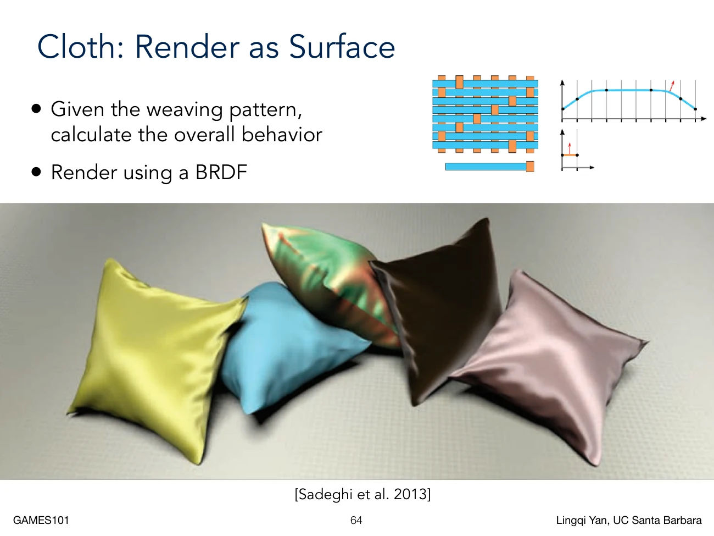
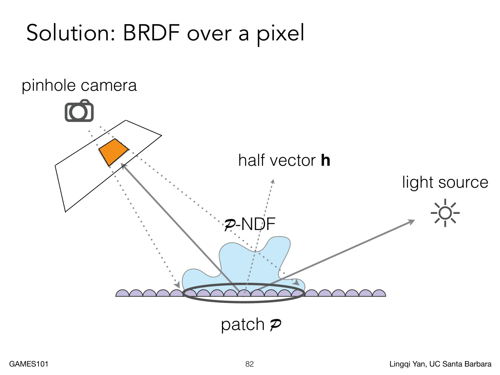
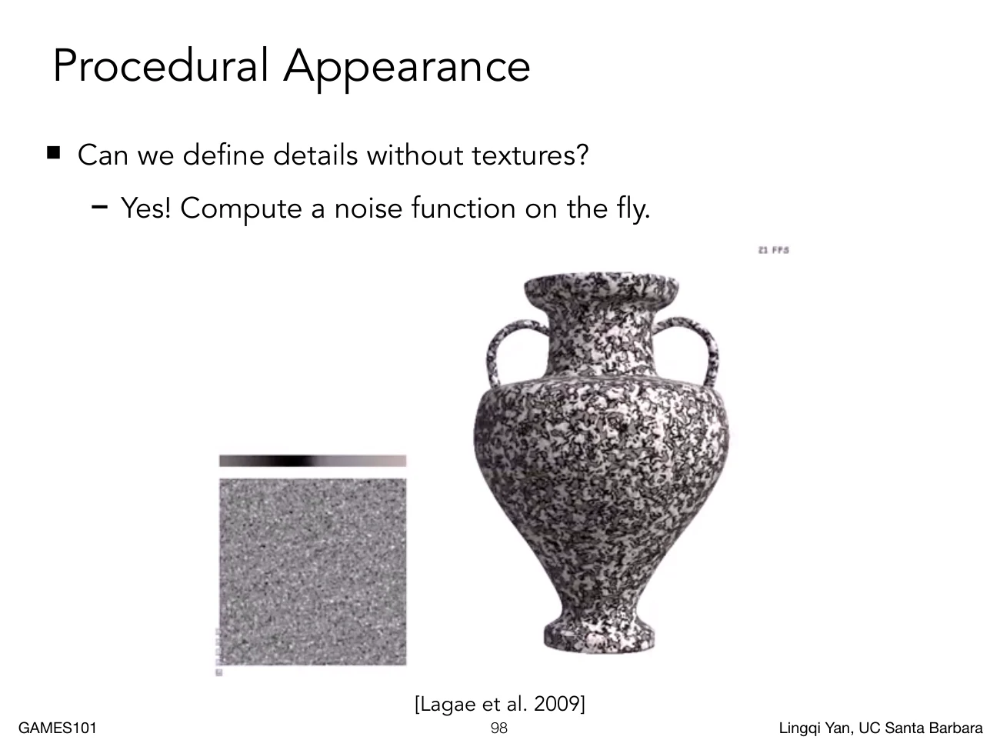
常见坑
用统计 NDF 渲染金属闪片 → 高光形状不对、闪烁感缺失 → 需要 p-NDF 或显式几何细节。
程序化噪声频率设置过高 → 出现走样/闪烁 → 根据像素覆盖率做带限滤波或降低频率。
UE / Unity 落地
UE 的材质编辑器支持 Noise 节点，可用于程序化外观；Nanite 可承载高密度几何细节。
Unity 的 Shader Graph 有 Noise 节点，HDRP 的 Lit 着色器支持细节法线贴图。
引擎对照表
| 概念 / 效果 | Unreal Engine | Unity |
|---|---|---|
全局光照/光传输 | Lumen（实时全局光照）、Path Tracer（离线参考） | Enlighten（实时GI）、Progressive Lightmapper（烘焙） |
体积雾/参与介质 | Exponential Height Fog、Volumetric Fog | HDRP Volumetric Fog |
头发/毛发 | Groom 组件、Hair Strands 着色 | HDRP Hair 着色器 |
次表面散射 | Subsurface Profile 着色模型 | HDRP Subsurface Scattering 材质 |
程序化噪声 | 材质 Noise 节点 | Shader Graph Noise 节点 |
细节法线/微表面 | 法线贴图、Nanite 高模细节 | 法线贴图、Detail Map |
术语双语表
| English | 中文 | 说明 |
|---|---|---|
| Unbiased | 无偏 | 估计器期望值永远等于真实值，与样本数无关。 |
| Biased | 有偏 | 估计器期望值有系统误差；若样本无穷时收敛则称为一致。 |
| BDPT | 双向路径追踪 | 从相机和光源各追踪子路径再连接端点，适合光源侧复杂光传输。 |
| MLT | Metropolis 光传输 | 用 MCMC 局部扰动路径，擅长困难光路，但收敛不均、不用于动画。 |
| Photon Mapping | 光子映射 | 两阶段有偏方法：光子追踪+最终收集，用局部密度估计着色。 |
| VPL | 虚拟点光源 | 即时辐射度中把光路端点当作点光源来照亮场景。 |
| Phase Function | 相位函数 | 描述参与介质中散射光的角度分布，类似介质中的 BRDF。 |
| BSSRDF | 双向表面散射反射分布函数 | BRDF 的推广，允许入射点和出射点不同，用于次表面散射。 |
| p-NDF | 像素级法线分布函数 | 把像素覆盖区域内的法线分布聚合，解决细节材质采样困难。 |
课后练习
01 解释“有偏但一致”的含义，并说明光子映射为什么属于这一类。
查看答案
提示：
从期望值和样本数趋于无穷时的行为两个角度回答。
有偏但一致是指：估计器在有限样本下期望值不等于真实值（有系统误差），但当样本数趋于无穷时，期望收敛到真实值。光子映射用局部密度估计 ΔN/ΔA 近似 dN/dA，有限光子数下核大小有限导致模糊（有偏）；光子数趋于无穷时，同样 N 个光子覆盖的 ΔA 趋近 dA，估计收敛到真实密度（一致）。
02 BDPT 和光子映射各自适合什么场景？为什么 BDPT 实现更难？
查看答案
提示：
考虑光源侧光传输复杂度和 SDS 路径。
BDPT 适合光源侧光传输复杂的场景（如光源被遮挡、需要多次弹射），因为它从光源和相机同时追踪子路径并连接。光子映射适合 SDS 路径和焦散，因为光子可以从光源出发记录在漫反射表面再被相机收集。BDPT 实现更难是因为需要处理两条子路径的各种连接组合，并做多重重要性采样加权，代码复杂且速度慢。
03 Marschner 模型中的 R、TT、TRT 分别代表什么光路？双圆柱模型为什么能更好地渲染动物毛发？
查看答案
提示：
联系头发三层结构中的髓质。
R 是表面反射，TT 是透射-透射（穿过头发），TRT 是透射-反射-透射（进入头发、内反射、再出来）。双圆柱模型在 Marschner 模型基础上增加了髓质（medulla）散射层，动物毛发的髓质结构复杂且会散射光，产生额外的散射 lobe，因此能表现动物毛发弥散且饱和的外观，而 Marschner 模型只考虑皮质吸收，渲染动物毛发会偏“干净”。
04 BSSRDF 与 BRDF 的核心区别是什么？偶极子近似如何简化 BSSRDF 的计算？
查看答案
提示：
从入射点与出射点是否相同、以及点光源近似角度回答。
BRDF 假设入射和出射在同一点，BSSRDF 允许光从一点入射、另一点出射，渲染方程从对方向积分推广为对表面点和方向的双重积分。偶极子近似用两个点光源（一个真实光源在表面上方，一个虚拟光源在表面下方）来近似半无限介质中的光扩散，从而避免直接计算复杂的 BSSRDF 积分。
05 在 UE 或 Unity 中，如何为皮肤材质启用次表面散射效果？请说出关键设置。
查看答案
提示：
参考引擎的着色模型或材质类型。
在 UE 中，将材质的 Shading Model 设为 Subsurface Profile，并指定一个 Subsurface Profile 资产，调节散射半径和颜色。在 Unity HDRP 中，将材质类型设为 Subsurface Scattering，调节 Scattering Radius 和 Scattering Color，并确保厚度贴图正确。两者都是对 BSSRDF 的实时近似。